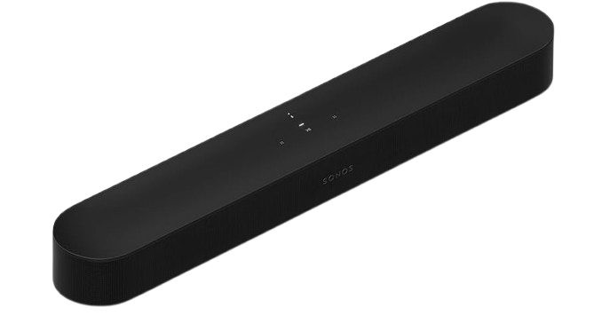

Smart Soundbar
מקרן קול חכם וקומפקטי של Sonos, שמתאים לטלוויזיה, גיימינג, מוזיקה ועוד. הדגם תומך ב־Dolby Atmos, באפליקציית Sonos, ב־Apple AirPlay 2, ומציע חוויית שמע פנורמית בעיצוב מינימליסטי ונקי. לפי דף המוצר ב־BUG, הוא כולל גם HDMI eARC, Wi-Fi, Ethernet ומתאם אופטי באריזה.
* כרגע קיים מחיר מיוחד על הדגם באתר BUG.
1,999 ₪
1,499 ₪
להזמנה